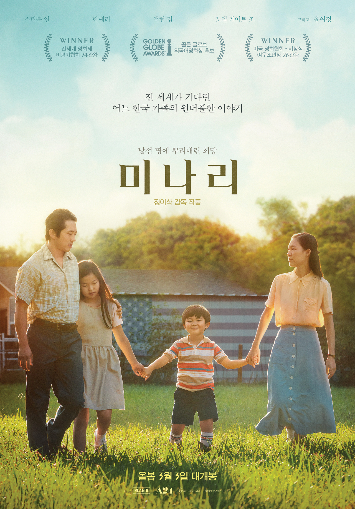

CHOIGEUNEH BON YOUNGHWA⭐️

Cruella(2021)🍿
Cruella is a 2021 American crime comedy film based on the character Cruella de Vil from Dodie Smith's 1956 novel The Hundred and One Dalmatians. The film is directed by Craig Gillespie with a screenplay by Dana Fox and Tony McNamara, from a story by Aline Brosh McKenna, Kelly Marcel, and Steve Zissis. It is the third live-action adaptation in the 101 Dalmatians franchise and serves as a reboot and an origin story for the title character. Emma Stone stars as the title character, with Emma Thompson, Joel Fry, Paul Walter Hauser, Emily Beecham, Kirby Howell-Baptiste, and Mark Strong in supporting roles. Set in London during the punk rock movement of the 1970s, the film revolves around Estella Miller, an aspiring fashion designer, as she explores the path that will lead her to become a notorious up-and-coming fashion designer known as Cruella de Vil.Walt Disney Pictures announced the film's development in 2013, with Andrew Gunn as producer. Stone was cast in 2016 and also serves as an executive producer on the film alongside Glenn Close, who portrayed Cruella in the previous live-action adaptations, 101 Dalmatians (1996) and 102 Dalmatians (2000). Principal photography took place in England between August and November 2019.Cruella premiered in Los Angeles on May 18, 2021, the first major red carpet event since the COVID-19 pandemic began, and was released in the United States theatrically and simultaneously available on Disney+ with its Premier Access feature on May 28. The film received mixed-to-positive reviews with praise from critics for the performances (particularly Stone, Thompson, and Hauser), Gillespie's direction, visual style, costume design, production values, and soundtrack, but criticism for its screenplay. It grossed over $233 million worldwide, making it the ninth highest-grossing film of 2021. A sequel is currently[when?] in development, with Stone to reprise her role.

Minari(2020)🍿
Minari (Korean: 미나리 [minaɾi], transl."water celery") is a 2020 American drama film written and directed by Lee Isaac Chung. It stars Steven Yeun, Han Ye-ri, Alan Kim, Noel Kate Cho, Youn Yuh-jung, and Will Patton. A semi-autobiographical take on Chung's upbringing, the plot follows a family of South Korean immigrants who try to make it in the rural United States during the 1980s.
Minari had its world premiere at the Sundance Film Festival on January 26, 2020, winning both the U.S. Dramatic Grand Jury Prize and the U.S. Dramatic Audience Award. It began a one-week virtual release on December 11, 2020, and was released theatrically and via virtual cinema on February 12, 2021, by A24.
The film received critical acclaim, with many declaring it one of the best films of 2020. It earned six nominations at the 93rd Academy Awards: Best Picture, Best Director, Best Original Score, Best Original Screenplay, Best Actor (Yeun), and Best Supporting Actress (Youn), with Youn winning for her performance, making her the first Korean to win an Academy Award for acting. It also won the Golden Globe Award for Best Foreign Language Film, was nominated for the Screen Actors Guild Award for Outstanding Performance by a Cast in a Motion Picture, and earned six nominations at the 74th British Academy Film Awards, including Best Film Not in the English Language.
 Maggie(2018)🍿
Die Angestellten eines Seouler Krankenhauses mögen den Röntgenraum am meisten. Eines Tages wird ein Paar beim Sex im Röntgenraum abgelichtet. Alle rätseln, wem die Hüften und der Penis auf dem Röntgenbild gehören könnten. Yun-yeong glaubt, sie und ihr Freund Sung-won seien auf dem Foto zu sehen. Sie bereitet sich schon auf ihre Kündigung vor und auch die Chefärztin Kyung-jin konfrontiert sie, warum sie das Foto an sich genommen habe. Dennoch bemerken sie ein größeres Problem. Die beiden sind die einzigen im Krankenhaus. Als sie versuchen herauszufinden, was mit den anderen ist, sagen alle, sie seien krank. Kyung-jin vermutet, dass alle regelmäßig im Röntgenraum Sex hatten und aus Scham nicht zur Arbeit kommen. Doch Yun-yeong möchte den Menschen vertrauen und nachsehen, ob sie tatsächlich krank sind. Als beide einen Angestellten aufsuchen, liegt dieser bewusstlos auf dem Boden. Die beiden Mediziner leiten die notwendigen Schritte ein und helfen ihm. Danach wollen sie bei den anderen Angestellten nicht mehr nach sehen, da sie wohl tatsächlich krank sind.
Maggie(2018)🍿
Die Angestellten eines Seouler Krankenhauses mögen den Röntgenraum am meisten. Eines Tages wird ein Paar beim Sex im Röntgenraum abgelichtet. Alle rätseln, wem die Hüften und der Penis auf dem Röntgenbild gehören könnten. Yun-yeong glaubt, sie und ihr Freund Sung-won seien auf dem Foto zu sehen. Sie bereitet sich schon auf ihre Kündigung vor und auch die Chefärztin Kyung-jin konfrontiert sie, warum sie das Foto an sich genommen habe. Dennoch bemerken sie ein größeres Problem. Die beiden sind die einzigen im Krankenhaus. Als sie versuchen herauszufinden, was mit den anderen ist, sagen alle, sie seien krank. Kyung-jin vermutet, dass alle regelmäßig im Röntgenraum Sex hatten und aus Scham nicht zur Arbeit kommen. Doch Yun-yeong möchte den Menschen vertrauen und nachsehen, ob sie tatsächlich krank sind. Als beide einen Angestellten aufsuchen, liegt dieser bewusstlos auf dem Boden. Die beiden Mediziner leiten die notwendigen Schritte ein und helfen ihm. Danach wollen sie bei den anderen Angestellten nicht mehr nach sehen, da sie wohl tatsächlich krank sind.